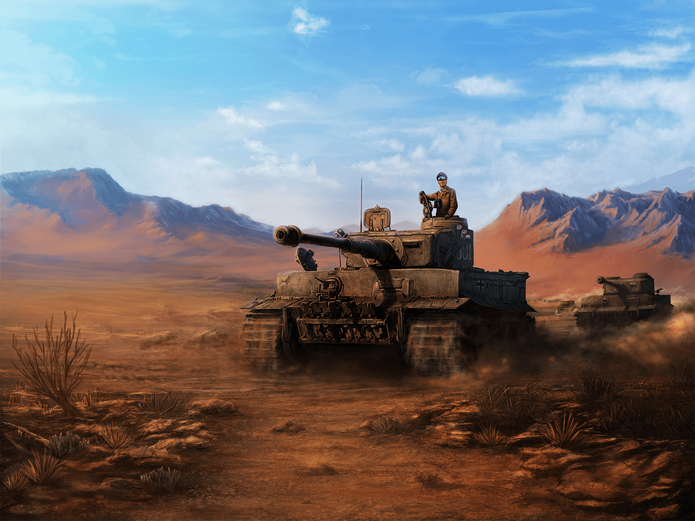
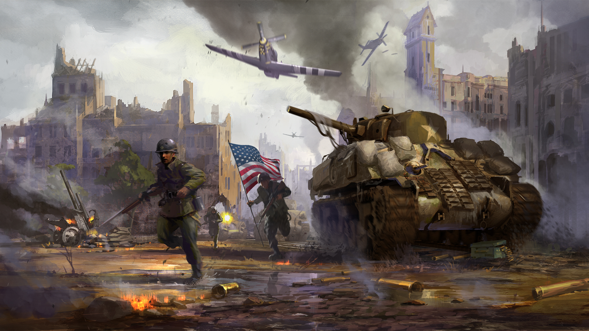
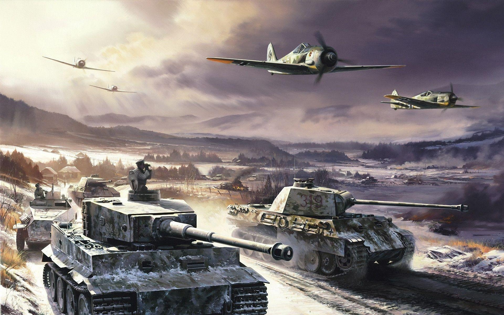
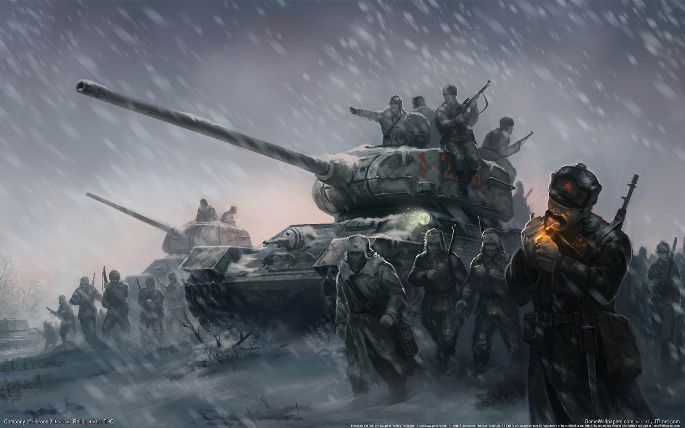
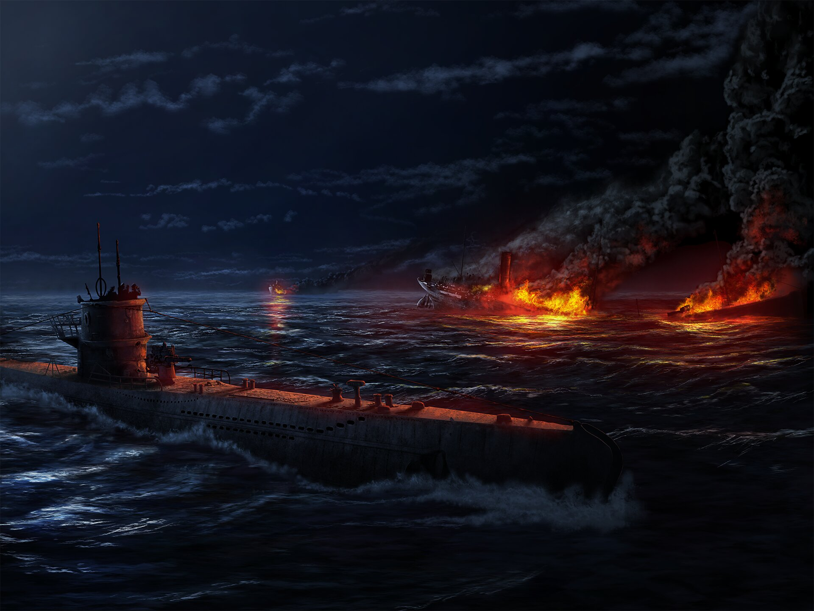
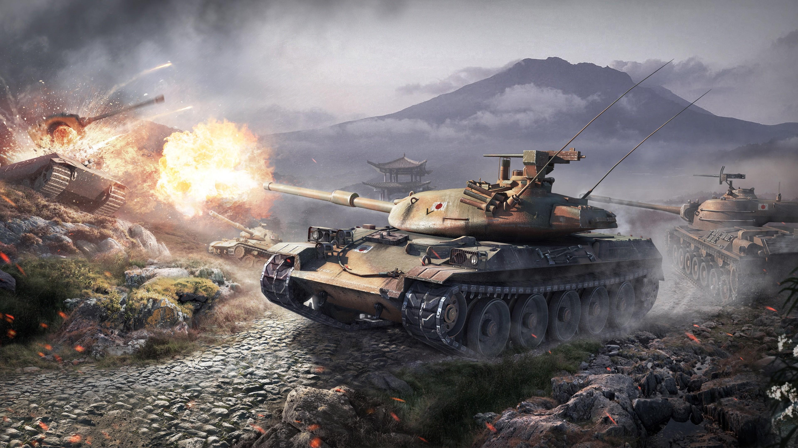
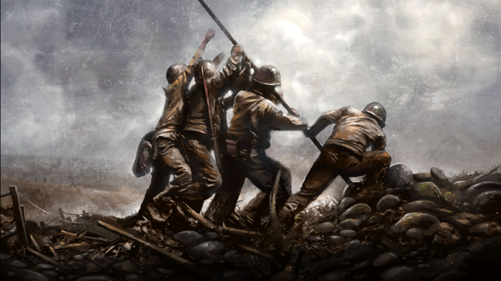
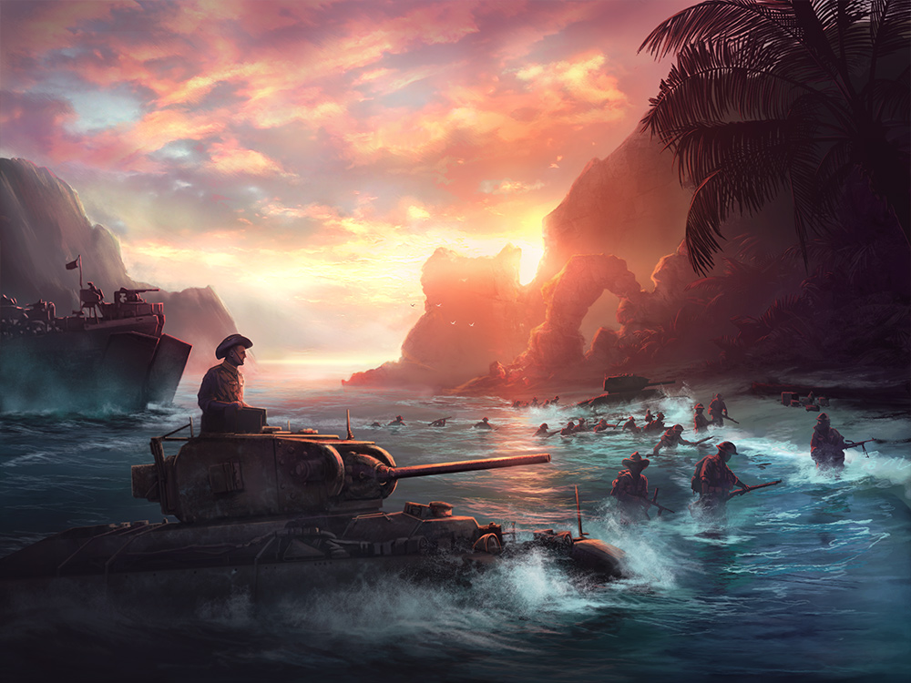

Contrary to what the public wants you to think, I'm not on an FBI watchlist.
Here are some of my favorite artpieces from the game
       I love playing as Italy and focusing on conquering the harsh terrains of Africa.
Once you've done it a few times, it gets easy, but I'm never gueranteed a win since the game changes each time I play.
The options to change history and make your own path is something I really like!
It's really in the alternative history that makes me keep coming back.
There's a ton of options from all countries to change the fate of the world
These are just some of the things that I have done in my games and almost always have a blast!